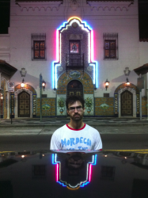

Code Projects
Projects related to Dev Bootcamp, Johns Hopkins Data Science Track, and other endeavours of self-teaching.

Community Projects
Staying involved in building neighborhoods through projects like Blue 1647, Working Bikes, and others.

Cultural and Technical Blog
Weekly posts keeping up with the nuts-and-bolts as well as the whole-self development of Dev Bootcamp.

Pete is a student of the world, a constant self-learner, and an enthusiast of giving back.
Reach out to me!
 Twitter
Twitter
 Email
Email
Twitter
Email